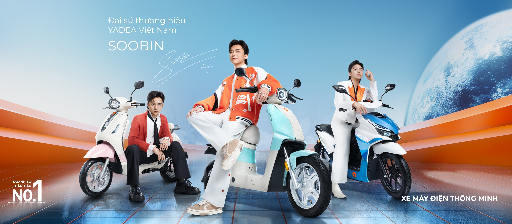

Công nghệ pin mới của hãng xe điện hàng đầu thế giới Yadea đã chính thức có mặt tại E-Bike Shop. Pin Graphene TTFAR mới không chỉ giúp xe di chuyển xa hơn mà còn mang lại trải nghiệm bền bỉ chưa từng có, giải quyết triệt để bài toán "vừa đi vài tháng đã chai bình" của người dùng.

1. Vật liệu Graphene - Cuộc cách mạng trong ngành xe điện
Graphene được mệnh danh là "siêu vật liệu" của thế kỷ 21, mỏng hơn tờ giấy một triệu lần nhưng lại cứng hơn kim cương và dẫn điện tốt hơn đồng. Yadea đã ứng dụng thành công vật liệu này vào việc chế tạo ắc quy, tạo ra dòng Ắc quy Graphene TTFAR độc quyền.
2. Tuổi thọ lên tới 5 năm - Gấp 3 lần ắc quy thông thường
Nếu như các loại ắc quy axit-chì truyền thống trên thị trường chỉ có chu kỳ sạc xả khoảng 300-400 lần (tương đương 1 - 1.5 năm sử dụng), thì ắc quy Graphene của Yadea đạt tới con số ấn tượng 1.300 lần sạc xả. Điều này có nghĩa là bạn có thể sử dụng xe ổn định lên tới 5 năm mới phải cân nhắc việc thay bình mới, tiết kiệm một khoản chi phí cực kỳ lớn.
3. Sạc nhanh vượt trội và chống phồng rộp
Nhờ cấu tạo phân tử đặc biệt, ắc quy Graphene có khả năng tiếp nhận dòng điện sạc cường độ cao mà không bị sinh nhiệt quá mức. Vỏ bình được làm từ vật liệu ABS siêu bền, có khả năng chịu nhiệt độ cao và chịu va đập tốt, loại bỏ hoàn toàn rủi ro phồng rộp, biến dạng vỏ bình trong quá trình sử dụng.